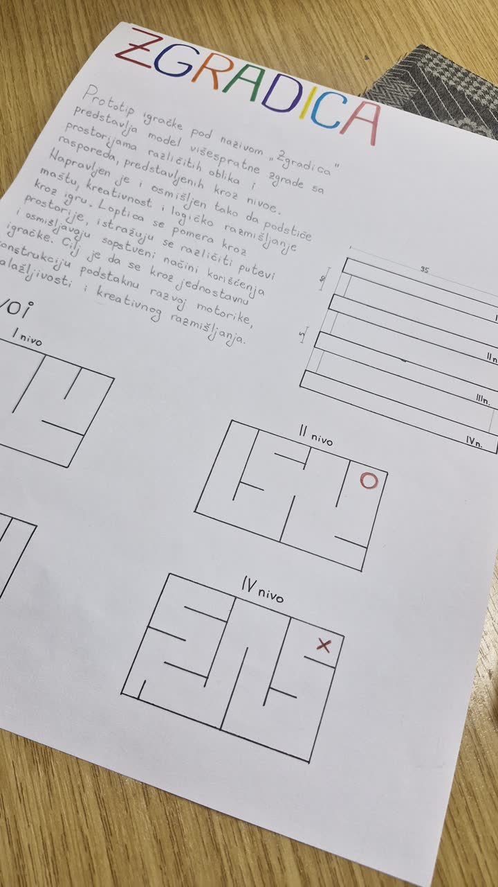
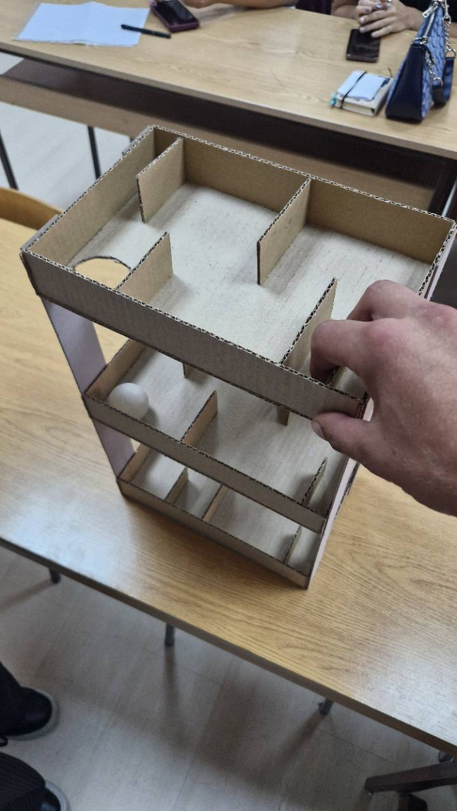
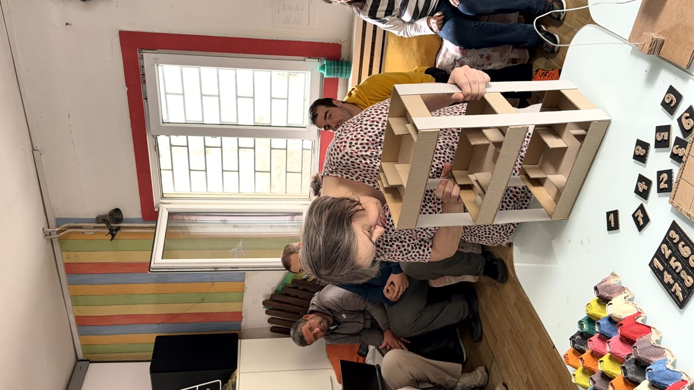

Radovi i primeri / Čas 6 / Prototip igračke
Zgradica
Teodora Radojičić72/24
Dosije: Prototip igračke
Čas 6
1 prikaz rada · Gradivo časa


Čas 2
Višeetažna kartonska konstrukcija sa unutrašnjim pregradama, otvorima i belom lopticom.


Isprobano u udruženju · 09.10.2026.
Na snimku od 23 sekunde korisnica pomera i okreće zgradu: loptica prolazi kroz rupu sprata i spušta se naniže, uz aplauz u pozadini. Fotografija je iz istog trenutka — rad je probavan i na krevetu, tamo gde je korisnik.


Ista ruka, ostale nedelje
- Tekstilni otpad Reciklaža tekstilanedelja 6 · 2 slike · drugi dosije ovog časa